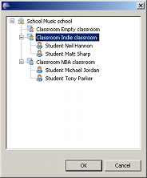
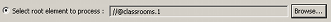
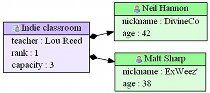

Emf2gv provides a run configuration page that allows to change several generation parameters :
The emf2gv run configuration consists of two tabs :
The main configuration tab allows to set :
Emf2gv allows not to generate the diagram for the whole resource content. This is useful when your model contains a lot of contents. In order to restrict the EObjects to process, select the Select root element to process option and click Browse...
A dialog appears allowing to select an element in the chosen model :
After having chosen an element, the field shows its path :
If we consider the School example, after having selected the Indie Classroom, we get the following diagram (that you may compare to the one that had been generated above, you may notice that the School node has disapeared, as the other classrooms nodes) :
|
 |
This tab allows to add filters to those already embedded in the Graphical Description.
See the concept's Filters section for more details about it.